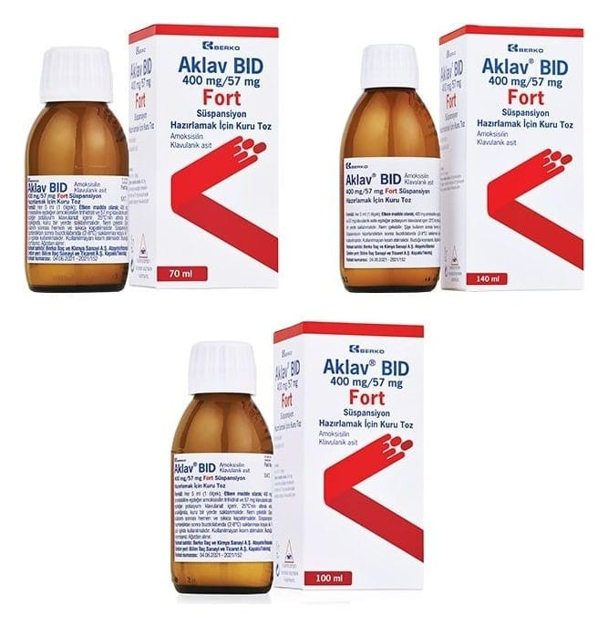

Aklav BID 400 mg/57 mg Fort Süspansiyon Hazırlamak İçin Kuru Toz, 140 ml

Ne için kullanılır
KT · Bölüm 1AKLAV, enfeksiyonların tedavisinde kullanılan bir antibiyotiktir ve enfeksiyona neden olan bakterileri öldürerek işlev görür. Amoksisilin (amoksisilin trihidrat olarak) adı verilen bir penisilin ve amoksisilinin inaktive olmasını engelleyerek işlev gören klavulanik asit (potasyum klavulanat olarak) olmak üzere iki etkin bileşen içerir.
AKLAV sarımsı beyaz kristalize toz görünüşlüdür. İşaretli çizgiye kadar sulandırıldığında 70 mL, 100 mL ve 140 mL süspansiyon elde edilen, bal rengi cam şişelerde sunulmaktadır. Beraberinde 5 mL'lik bir adet ölçü kaşığı bulunur. AKLAV, aşağıdaki durumlarda duyarlı organizmaların neden olduğu bakteriyel enfeksiyonların tedavisinde kullanılır: • Tekrarlayan bademcik iltihabı, bakterilerin neden olduğu sinüzit, akut orta kulak iltihabı gibi
Sayfa 2 / 10
üst solunum yolu enfeksiyonları • Kronik bronşitin akut alevlenmeleri, akciğer iltihabı gibi alt solunum yolu enfeksiyonları • İdrar yolu iltihabı, üretra iltihabı, böbreklerin bakteriyel iltihabı, kadın üreme sistemi (genital sistem) enfeksiyonları, belsoğukluğu (gonore) gibi üreme organları ve idrar yolları ile ilgili enfeksiyonlar • Bağ dokusu iltihabı (selülit), hayvan ısırmaları gibi deri ve yumuşak doku enfeksiyonları • Diş abseleri gibi diş ve dişeti ile ilgili enfeksiyonlar • Kemik ve eklem enfeksiyonları (Osteomiyelit gibi)